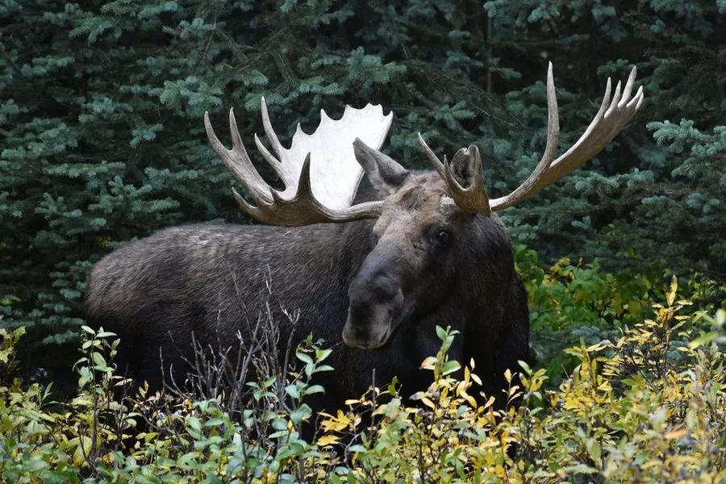

哺乳动物 · 动物界
驼鹿 Alces alces

现存体型最大的鹿科动物，肩高可超过 2 米，雄鹿长有宽大的掌状角，长腿适合在深雪与沼泽中活动。
- 分类
- 门脊索动物门纲哺乳纲目偶蹄目科鹿科属驼鹿属
- 栖息环境
- 北方针叶林与混交林，偏好有沼泽、湖泊和河岸的环境
- 地理分布
- 斯堪的纳维亚、俄罗斯、北美洲北部，中国东北和新疆北部有少量分布
- 保护级别
- IUCN 无危（LC）；中国国家二级保护动物
物种志
驼鹿体长 2.4–3.1 米，肩高 1.4–2.3 米，体重 200–700 kg，是现存最大的鹿科动物。它的体形高大，肩部隆起，四肢细长；毛色为深褐至近黑色，四肢下部和鼻部颜色较浅；雄鹿长有巨大的掌状角，宽可达 1.5 米，雌鹿无角。
驼鹿分布于北半球的针叶林和混交林，从斯堪的纳维亚、俄罗斯到加拿大和美国北部，中国东北和新疆北部的针叶林也有分布。它善游泳，能潜水取食水生植物，夏季多吃水生植物和嫩叶，冬季取食灌木和树皮。驼鹿多在晨昏活动，独居，听觉和嗅觉灵敏；发情期雄鹿会发出低沉的吼声。雌兽妊娠期约 8 个月，每胎 1–2 仔。驼鹿在北美和北欧部分地区数量稳定，但中国境内种群稀少，被列为国家二级保护动物。
形态与习性
- 食性水生植物、嫩叶、灌木与树皮
- 体长2.4–3.1 m，肩高 1.4–2.3 m
- 体重200–700 kg
- 寿命野外约 15–20 年
- 繁殖妊娠期约 8 个月，每胎 1–2 仔
- 鹿角雄鹿掌状角宽可达 1.5 m
- 游泳善游泳，可潜水取食水生植物
趣味知识
- 驼鹿是现存最大的鹿科动物，肩高可超过 2 米。
- 雄鹿的掌状角宽可达 1.5 米，每年脱落重长。
- 驼鹿善游泳，能潜入水中取食水生植物。
- 它的长腿让它在深雪和沼泽中行动自如。
生态关系
- 捕食 ← 狼 狼群围猎驼鹿